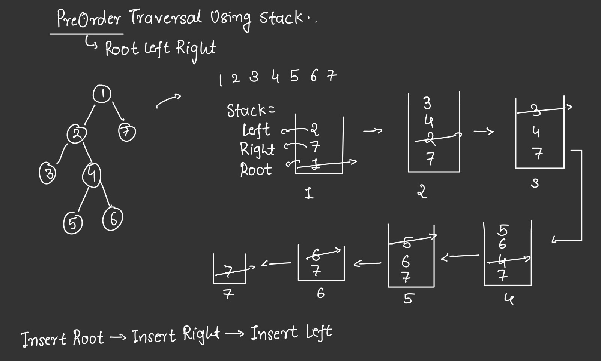
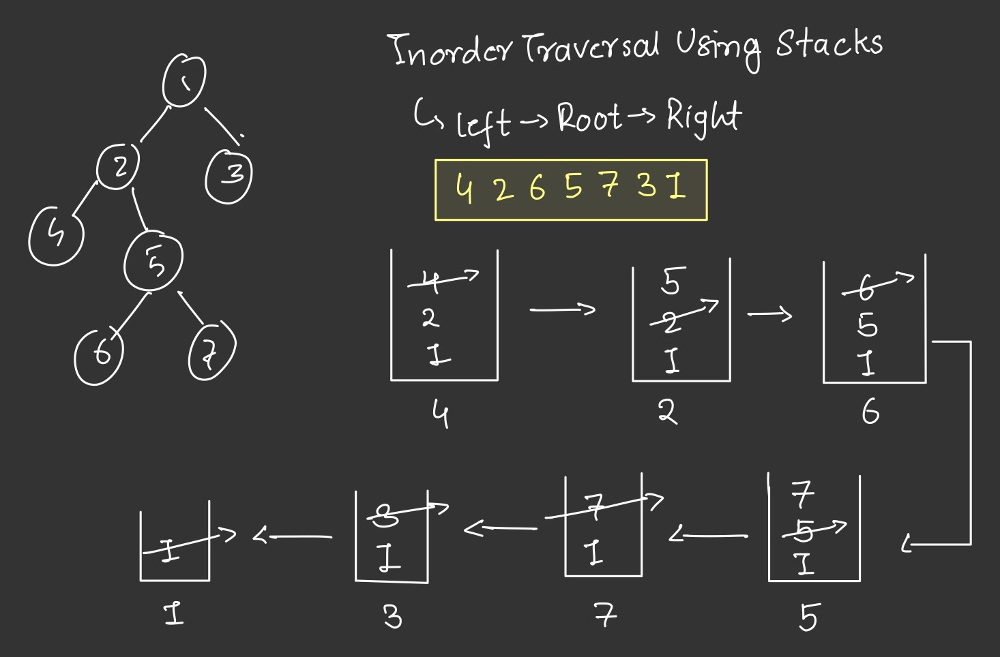
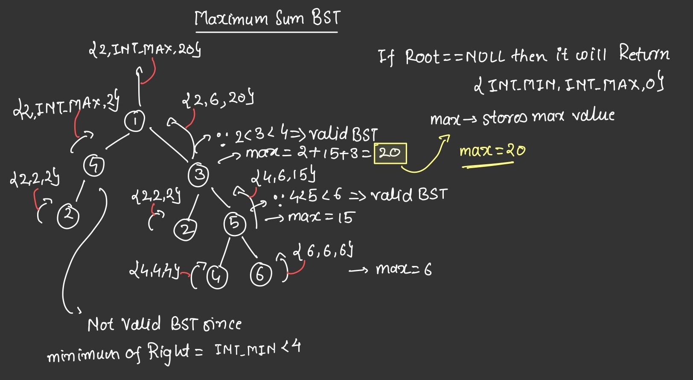

DSA SUBSTRING PROBLEM CLASSIFICATION
Traversal Problmes
- PreOrder Traversal
- One important property of preorder traversal using a stack is that it can be implemented iteratively, which makes it more memory efficient than the recursive approach.
- Steps
- Initialize an empty stack.
- Push the root node onto the stack.
- Repeat the following steps until the stack is empty:
- Pop an item from the stack and process it (print its value, for example).
- Push the right child of the popped node onto the stack (if it exists).
- Push the left child of the popped node onto the stack (if it exists).
- 
- Link to solution
- Inorder Traversal
- Steps
- Initialize an empty stack.
- Set the current node to the root of the tree.
- Repeat the following steps until the current node is null and the stack is empty:
- While the current node is not null, push the current node onto the stack and move to its left child.
- If the current node is null, but the stack is not empty, pop an item from the stack, process it (print its value, for example), and set the current node to its right child.
- If the current node is null and the stack is empty, you have traversed the entire tree.
- 
- Link to solution
- Steps
- Postorder Traversal
- Vertical Order Traversal
View Problems
- Binary Tree Right Side View
- Binary Tree Left Side View
- Top View of Binary Tree
- Bottom View Of Binary Tree
Divide And Conqure Problems
- Path Sum ll
- Longest Univalue Path
- Longest ZigZag Path in a Binary Tree
- Sum Root to Leaf Numbers
- Binary Tree Maximum Path Sum
- Lowest Common Ancestor of a Binary Tree
- Count Univalue Subtrees
- Maximum Sum BST in Binary Tree
- To Compute maximum sum of BST in Binary tree we need to compute sum of every valid BST.
-
To find whether a tree is BST or not we need to statisfy following conditions:
- Left subtree is BST
- Right subtree is BST
- Current root value is greater than largest value of the left subtree and lesser than the value of smallest element of right subtree.
- From above conditions every node in BT should return {minEle,maxEle,currentSumOfBT} vector / array.
- 
- Link to solution
Tree Property Problems